triangle_test, which performs a 2D cross product sign
test. This function takes an edge of the triangle and a sample point,
and computes whether the point lies to the left or right of that edge.
floor and ceil. This allows me to safely
iterate over discrete pixels while covering the entire triangle area.
(x + 0.5, y + 0.5), because we are using one sample per
pixel.
triangle_test on all
three edges. If the sample point passes all three edge tests and the
signs are consistent, it is inside the triangle. If it is inside, I
fill that pixel with the triangle’s color.
My implementation iterates only over the triangle’s bounding box and performs a constant amount of work per sample (three edge tests and a few comparisons). Therefore, the runtime is proportional to the number of samples in the bounding box, O(B), which is asymptotically no worse than an algorithm that checks each sample once within the bounding box.
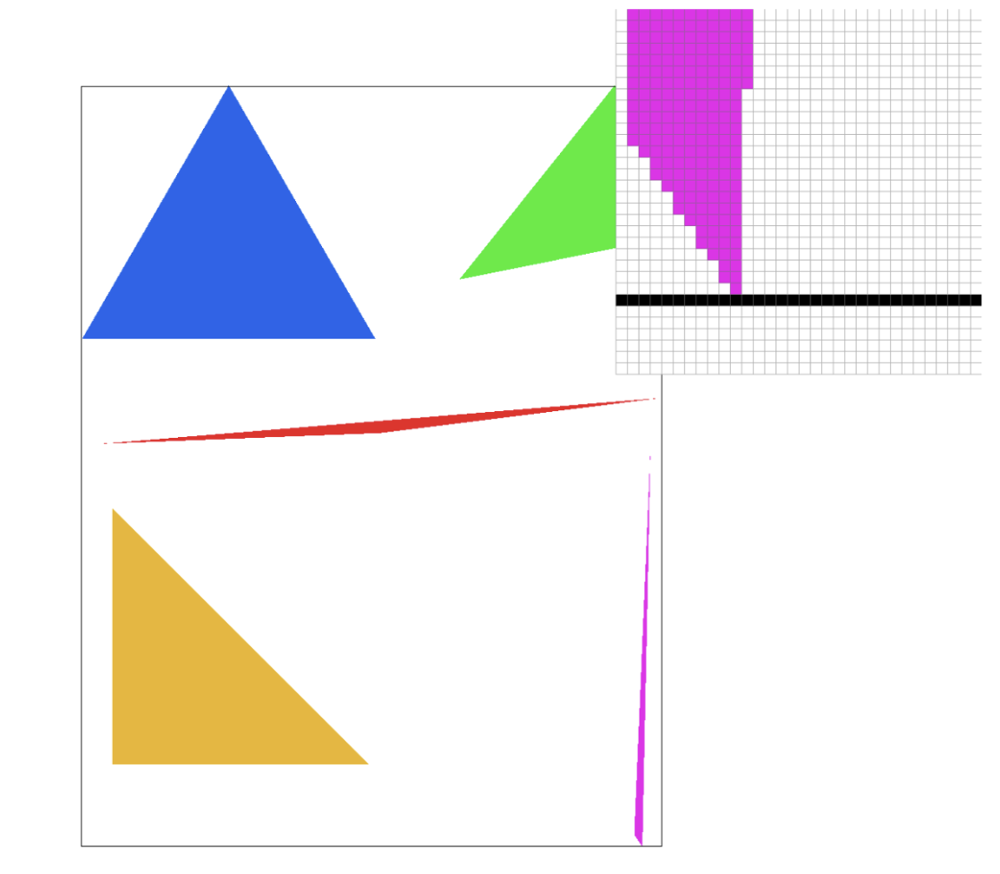
sample_buffer that stores multiple color values per
pixel. The number of stored colors per pixel equals
sample_rate. All of a pixel’s subsamples are stored next
to each other in memory.
N as the square root of
sample_rate. This means each pixel is divided into an N
by N grid of evenly spaced subsamples. For example, if the sample rate
is 4, each pixel becomes a 2 by 2 grid. If the sample rate is 16, each
pixel becomes a 4 by 4 grid.
(i + 0.5) / N and (j + 0.5) / N.
triangle_check, which computes the
2D cross product sign for a triangle edge. I evaluate this for all
three edges of the triangle at the subsample’s position.
sample_buffer using
the pixel’s base index plus the subsample offset
(j * N + i), and I store the triangle’s color there.
resolve_to_framebuffer averages all the subsamples for
each pixel and writes the final averaged color to the screen.
To support supersampling, I made several changes:
sample_buffer, which stores multiple
subsamples per pixel instead of one color per pixel.
rasterize_triangle so that it loops over all
subsamples within each pixel rather than testing only the pixel
center.
sample_buffer.
resolve_to_framebuffer to average subsamples
into a final color per pixel.
fill_pixel so that it
fills all subsamples of a pixel with the same color, instead of
performing subsample edge testing.
These changes shift the pipeline from per-pixel coloring to per-subsample coloring followed by averaging.
resolve_to_framebuffer averages the subsamples,
partially covered pixels produce blended colors instead of harsh
edges. This smooths the boundary of the triangle.
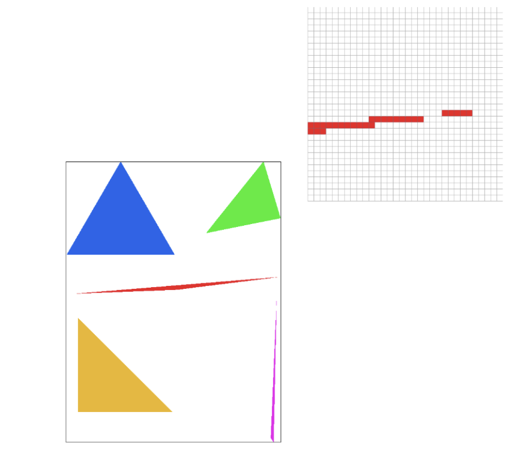 Sample Rate 1 |
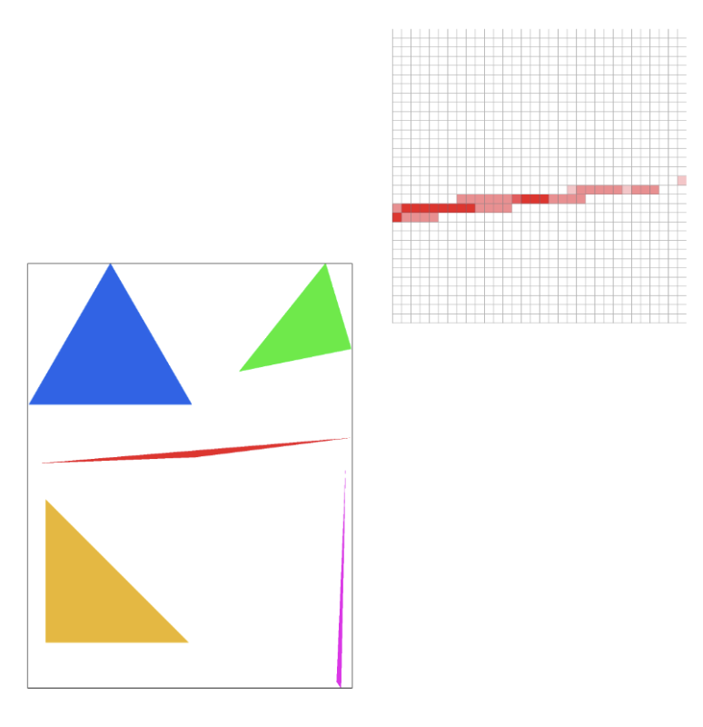 Sample Rate 4 |
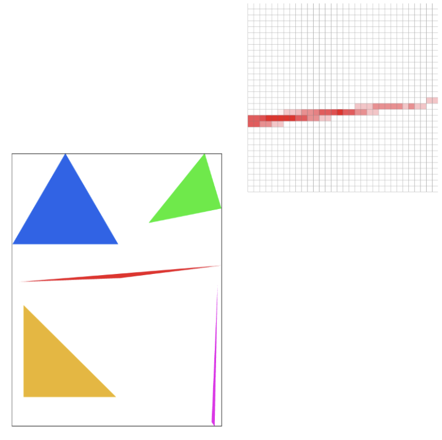 Sample Rate 16 |
For my updated version of robot.svg, saved as my_robot.svg in the docs/ directory, I modified cubeman so that he appears to be waving. Instead of keeping his arms straight down, I applied rotation and translation transforms to both the upper and lower arm segments. I rotated the upper arms upward so they extend above his shoulders, and then rotated the lower arms to create a more dynamic bent-arm pose. In particular, I angled the right lower arm slightly outward to make it look like he is actively waving, while the left arm is raised in a more static celebratory pose. I kept the original red color and proportions, focusing mainly on experimenting with transforms to change the pose. My goal was to make cubeman feel more expressive and animated using only geometric transformations.
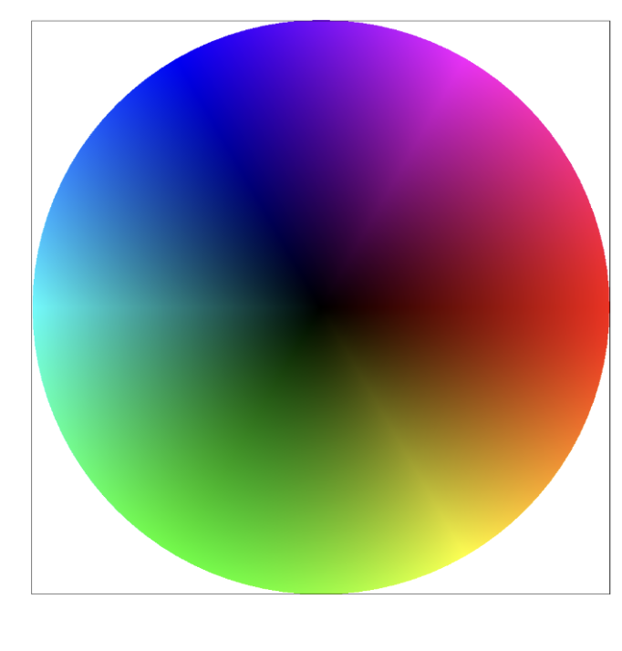
Pixel sampling is how we decide what color to assign to a screen pixel
when mapping a texture image onto a triangle. For each pixel inside the
triangle, we compute a corresponding texture coordinate
(u, v) using barycentric interpolation of the triangle’s
vertex texture coordinates.
The (u, v) values are in the range [0, 1], but
they usually contain decimal values. Since textures are stored as
discrete texels (integer grid positions), we can’t directly index into
the image with decimal coordinates. Instead, we need a sampling method
to determine what color to return from the texture.
In my implementation, I compute the interpolated (u, v) for
each pixel and pass it into tex.sample(). For Task 5, I
always sample from mipmap level 0 (the full-resolution texture). Inside
the texture class, I implemented two pixel sampling methods: nearest and
bilinear.
sample_nearest function, I first retrieve the
correct mipmap level image. Then I convert (u, v) from
normalized coordinates into texture space by multiplying
u by the texture width and v by the texture
height.
0.5 before casting to an integer. This
effectively selects the texel closest to the
(u, v) coordinate.
get_texel.
sample_bilinear function, I again start by
retrieving the mipmap level image. I convert (u, v) into
texture space, but this time I subtract 0.5 so that
interpolation happens between texel centers.
floor to
find the top-left texel of the surrounding square. I then compute the
neighboring texels to the right and bottom. All coordinates are
clamped to stay within valid bounds.
(u, v) coordinate lies between the texels
horizontally and vertically.
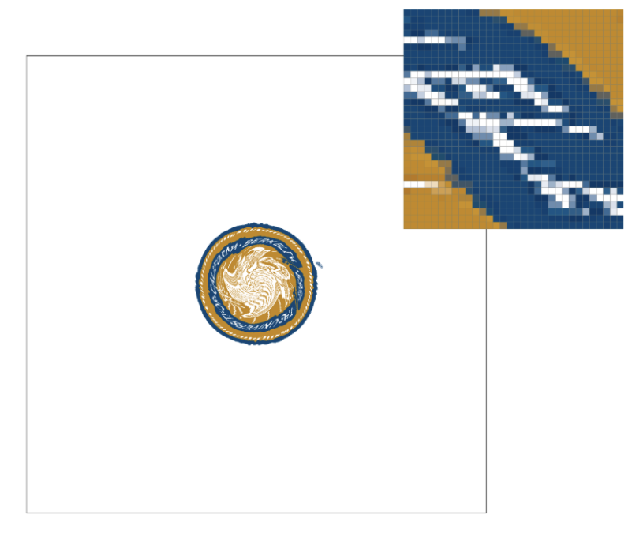 Nearest 1 spp |
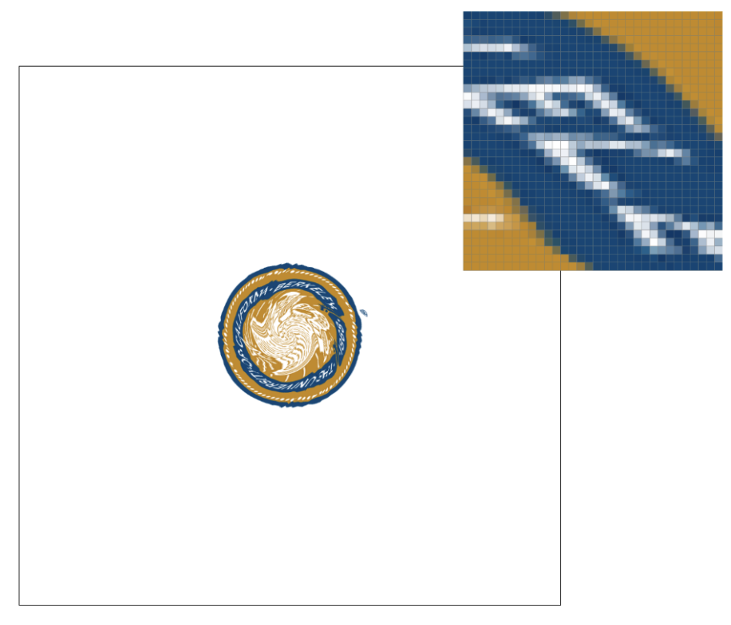 Nearest 16 spp |
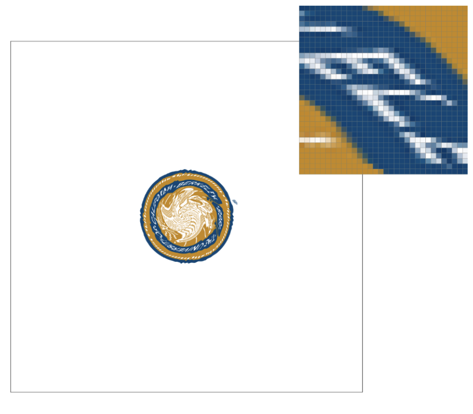 Bilinear 1 spp |
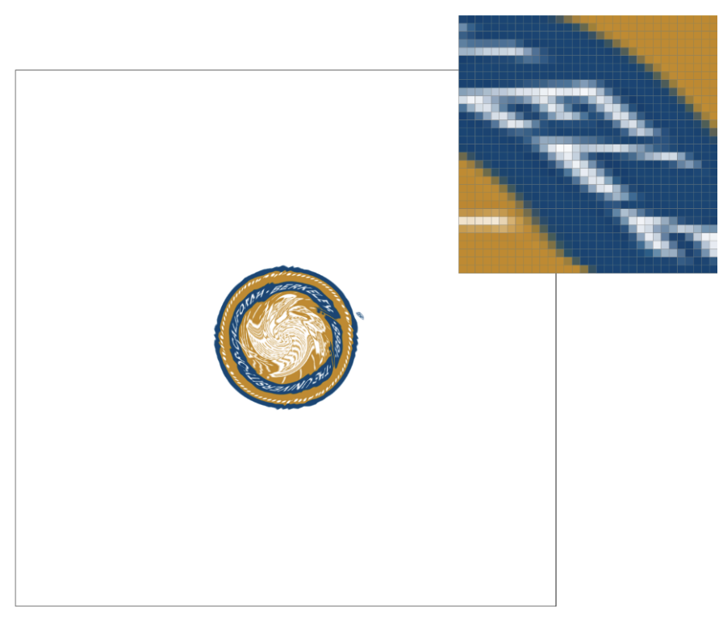 Bilinear 16 spp |
When comparing the four screenshots (nearest at 1 sample per pixel, nearest at 16 samples per pixel, bilinear at 1 sample per pixel, and bilinear at 16 samples per pixel), you can clearly see how both the sampling method (nearest vs. bilinear) and the sample rate (1 vs. 16 samples per pixel) change how the textured triangle looks.
This one looks the most blocky and pixelated. Nearest-neighbor just grabs the closest texel color with no blending at all. Since we’re also only using 1 sample per pixel, there’s no supersampling to smooth anything out. The result has sharp edges, visible jaggies, and noticeable artifacts.
This already looks much better. Because we’re supersampling 16 times per pixel, we’re averaging multiple samples together, which helps smooth out the jagged edges. However, each individual sample still uses nearest-neighbor, meaning there’s still no blending at the texture level. While it’s much smoother than 1 sample per pixel, it’s still not as clean as bilinear in some areas, especially where the texture has a lot of detail.
Even with just 1 sample per pixel, bilinear already looks pretty smooth. That’s because bilinear doesn’t just grab one texel; it blends the four closest texels based on how close the sampling point is to each one. That blending softens transitions and makes gradients look much nicer. This already looks close to nearest with 16 samples, which shows how powerful bilinear filtering is by itself.
This one looks the best overall. It combines bilinear blending with supersampling, so you get smooth texture interpolation and smooth edges at the same time. Each pixel ends up being an average of 16 already-blended texture samples, which makes everything look very clean and high quality. This setting gives the best visual result, especially when zoomed in.
The difference comes down to how each method handles interpolation and aliasing. Nearest-neighbor is simple and fast, but it doesn’t smooth anything; it just picks one texel. Supersampling helps by averaging multiple samples, but if each sample is still harsh (like nearest), the improvement only goes so far.
Bilinear already smooths things at the texture level by blending nearby texels. So even with just 1 sample per pixel, it looks good. When you combine bilinear with supersampling, you’re smoothing both the texture details and the pixel edges, which is why that combination looks the best.
The biggest differences between nearest and bilinear sampling show up when the texture is zoomed in, has small details, or has strong contrast edges. In those situations, nearest sampling can look very blocky and harsh because it does not blend any surrounding texels. It simply picks one color per sample. That makes edges look jagged and can create obvious aliasing. This is especially noticeable at 1 sample per pixel, where there is no supersampling to smooth things out.
Bilinear sampling, on the other hand, blends the four closest texels together based on how close the sampling point is to each one. That blending makes color transitions look much softer and more natural. So if you have diagonal lines, small text, or smooth gradients, bilinear looks clearly better. The difference becomes even more obvious when you zoom in. Nearest exaggerates the pixelation, while bilinear still keeps things relatively smooth.
If you increase the sample rate to something like 16 samples per pixel, the difference between nearest and bilinear becomes smaller. Supersampling already helps reduce aliasing by averaging multiple samples inside each pixel. However, bilinear with 16 samples still looks the best overall because it combines texture blending with pixel averaging.
Overall, bilinear is usually the better choice when visual quality matters, especially when textures are scaled up or down significantly.
Level sampling is how we decide which mipmap level of a texture to use when rendering a triangle. A mipmap is essentially a stack of the same texture stored at different resolutions. If a triangle appears small or far away on the screen, using the full resolution texture can cause aliasing and unnecessary computation. Instead, we can use a lower resolution mipmap level that better matches how large the texture appears on screen.
In my implementation, I first compute a floating-point mip level using
get_level(). To do this, I measure how fast the UV
coordinates are changing across screen space. Specifically, I compute
the UV difference between the current pixel and its neighboring pixels
in the x and y directions. Then I convert those UV differences into
texel space by multiplying by the width and height of mipmap level 0.
I take the maximum of those values to estimate the pixel’s footprint in
texture space. Then I use log2 of that footprint to compute
the mip level. I clamp the result so it never goes below zero.
Once I have the floating-point level, I choose how to use it based on the level sampling mode:
After selecting the mip levels, I sample from each level using either nearest or bilinear pixel sampling, depending on the pixel sampling mode. If I’m in linear mip mode and the two mip levels are different, I blend the two sampled colors together. When combined with bilinear pixel sampling, this results in trilinear filtering.
Now that I’ve implemented pixel sampling, level sampling, and supersampling, it’s clear that each technique affects speed, memory usage, and image quality differently.
In short: nearest is faster, bilinear is smoother.
Higher-quality mipmapping reduces aliasing when textures shrink, but it adds extra sampling cost.
Supersampling is very powerful for reducing jagged edges, but it increases both memory usage and computation time.
The highest visual quality occurs when using bilinear pixel sampling, linear mip level sampling, and a high sample rate. However, this combination also requires the most computation and memory.
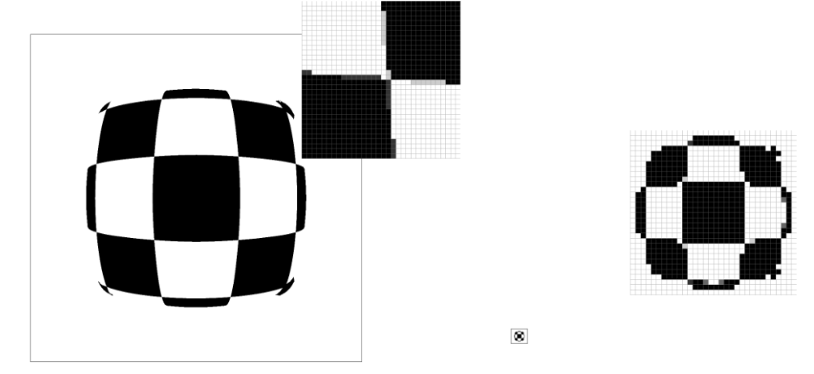 L_ZERO + P_NEAREST |
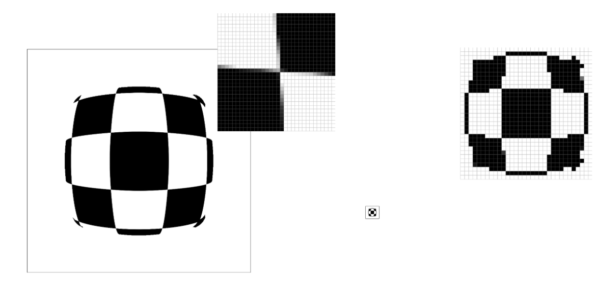 L_ZERO + P_LINEAR |
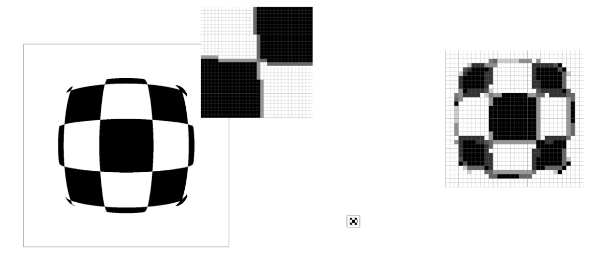 L_NEAREST + P_NEAREST |
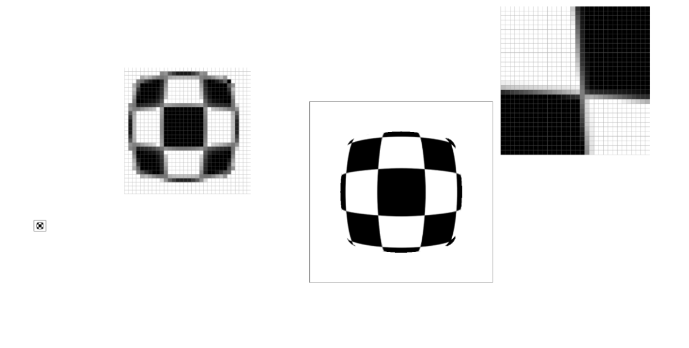 L_NEAREST + P_LINEAR |
Pixel sampling affects smoothness at a single resolution. Level sampling affects texture scaling behavior. Supersampling affects triangle edge smoothness. The highest visual quality uses bilinear pixel sampling, linear mip level sampling, and a high sample rate — but this costs the most memory and computation.
ChatGPT, OpenAI, chat.openai.com. Used for aid in sentence restructuring and word variation, as well as coding to check.